Highlighted Projects
AFM (Atomic Force Microscope) Management Software, Ara Research Co, Tehran, Iran, 2021
Temperature Calibrator Device PID controller, ACECR SUT branch, Tehran, Iran, 2021
Access Control and Restaurant System, Saipa Yadak Company, Tehran, Iran, 2020
Automatic Fare Collection (Tehran Metro), Tehran Metro, Tehran, Iran, 2020
Access Control Solution, ACECR KNTU branch, Tehran Metro, Tehran, Iran, 2020
Installed more than 1,000 tele-communication hole protector devices, Sharif University of Technology, Tehran, Iran, Jan 2019
Work Experiences
Technical Lead, Mar 2022 – Present
IroTeam, Tehran, Iran
Senior Middleware Engineer, Mar 2021 – Feb 2022
Ara Research Co, Tehran, Iran
- Developed an Atomic Force Microscope (AFM) System Controller Software for nano-imaging with 0.1 nm Z and 1 nm XY resolution
- Designed a 12MHz oscilloscope module with 4 channels and 27 signal ports for AFM signals inspection
- Prepared an Imager thread with profile viewer to explore 3MB/s TCP scanning data
- Created an UDP packet sender to guide the system with about 170 commands
- Defined a multi-capability diagram and graph drawer to display about 60 charts
- Implemented a mouse painter section for lithography to create a bitmap with a resolution of 2048
- Established more over 150 VCL forms for user convenience
- Implemented a mouse painter section for lithography to create a bitmap with a resolution of 2048
- Earned 30% more user satisfaction by identifying the operative problems compared to similars
- Formed a wizard procedure for operators to save more than 20% of the performing time
- Decreased Scanning time up to 20% by multi-process bitmap generating
- Established more than 30 mathematical tools to analyze the morphology of sample's surface for 2D/3D profile viewing, particle measurement, noise reduction, edge detection, histogram, roughness investigation, elasticity map creation, and etc
Brisk2021
BioBrisk2021
Brisk2021 Client Software
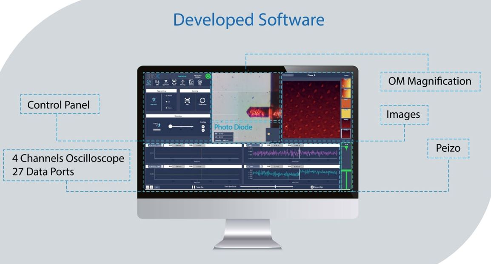
- Oscilloscope Panel(2 MB/s UDP): 4 dynamic channels, 27 data ports, pause/play action, dynamic time division, recording, scaling, piezoelectric and sample graphical status
- Imager Panel (3MB/s TCP): 1D/2D leveling, point and range selection, profile viewer
- OM magnification panel (8 megapixel CCD): Sample stage XY movement, Dynamic photodiode status, Screenshot and video recording
- Control Panel: Sample stage Z movement, Piezoelectric 1 step, Retraction, Settings
Brisk2021 Viewer Software
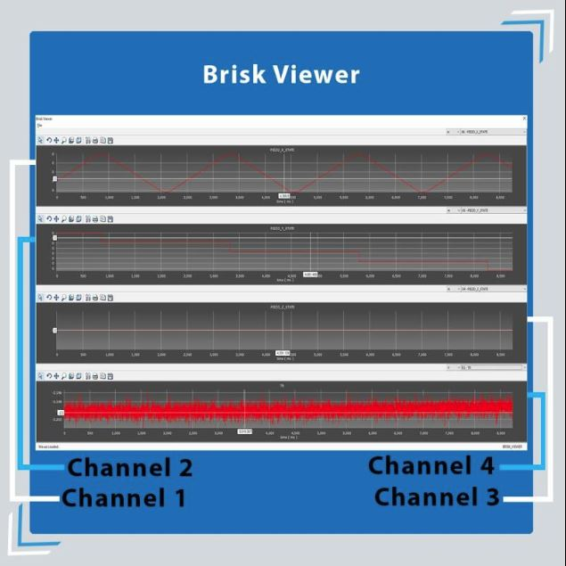
- Display all data ports saved in the Client application
- Zoom
- Export
- Scale changing
Brisk2021 Imager Software
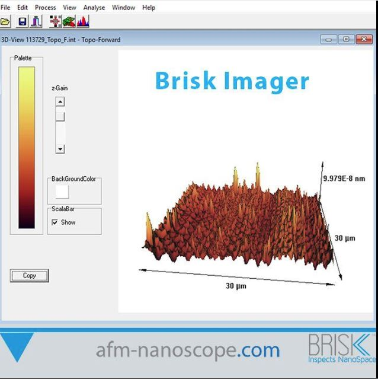
- 3D and 2D view of scanned data for the mathematical processes
- Histogram Analyze
- FFT, LPF, HPF kernels
- Noise reduction
- 1D and 2D Leveing
See the Product Details on Instagram: Instagram
Embedded Systems Engineer, Sep 2017 - Feb 2021
Asarad Noavar Ertebat, Tehran, Iran
- Formed a C++ time attendance server and middlewares for 10,000 personals to Increase 25% payroll accuracy and decrease 40% of food waste
- Structured an embedded device to handle over 10,000 fingerprints or RFID transactions/day for time attendance recording
- Set up a TCP server to manage 1,500 requests/hour and record all data in SQL server
- Incorporated a TCP server broadcaster to transmit 3,000 messages/day to 20 clients
- Programmed a server to check the database of 5,000 employees' information each 1 sec and send changes to 20 controllers for working in the first-offline mode over TCP
- Developed temperature PID controller for Thermo Camera Calibrating as a TCP server to broadcast temperature data with 1KHz sample rate
Thermo Camera Calibrator (ACECR SUT branch, Tehran Iran) #COVID19
UPASS Access Controller
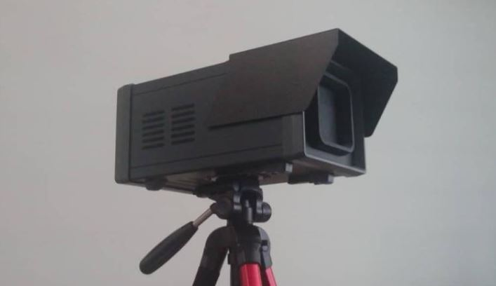
- Embedded C++ & Linux Platform
- Web interface
- PID controller
----------
Access Control and Readers Microserver Manager, Access Control Connected Restuarant Receinpt Issuer, and UPASS Access Controller (Sipa Yadak Company, Tehran, Iran)
UPASS Access Controller
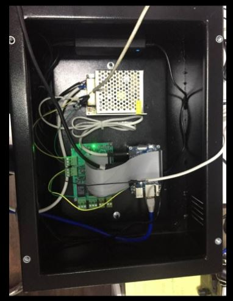
- Embedded C++ & Linux platform
- Recorded of all events (long-range RFID) from the non-blocking serial port thread (over 1,500 events/day)
- Authorized based on local MySQL query and open/close gateway with permissions
- Inserted to local MySQL database as first-offline design
- Synchronized with SQL server database
- Synchronized all related tables (black lists, white lists, shifts, holidays, personnel info) with SQL server database
- Using web-service as online monitoring
Restaurant Receipt Issuer
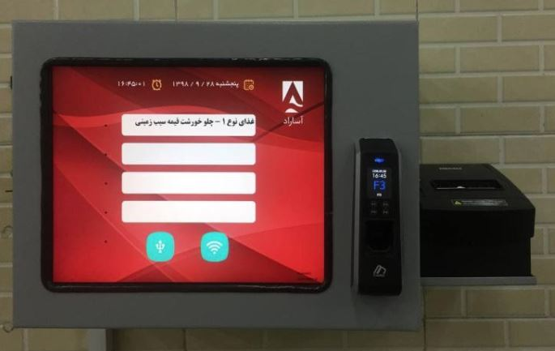
- C++ & Windows platform
- Issued 300 receipts/hour based on-time attendance, black list, and etc of SQL server with finger and RFID authorization
- Synchronized with SQL server database for offline mode functionality
- Inserted all transactions in the local MySQL database
- Synchronized with the server
- Displayed information for personnel
- Took all personnel data from the server and inserted in MySQL
- Derivated of thermal printer, Virdi 2100 plus reader(network SDK)
Reader Manager
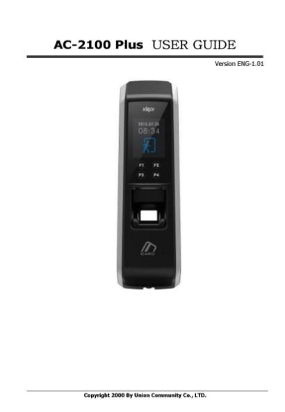
- C++ & Windows Server Platform
- Captured online logs from 20 devices in real-time in a separate thread (over 100 events/hour)
- Captured offline logs from 20 devices in a separate thread (over 1000 events/day)
- Managed 20 devices from SQL server in a separate thread (personnel information, Fingerprint and Card ID, holidays, department)
- Inserted, Edited and updated new finger-print and card id on virdi readers
- Derivated of Virdi SDK, Network
----------
Sonography Image Grabber (Payambaran Hospital, Tehran, Iran)
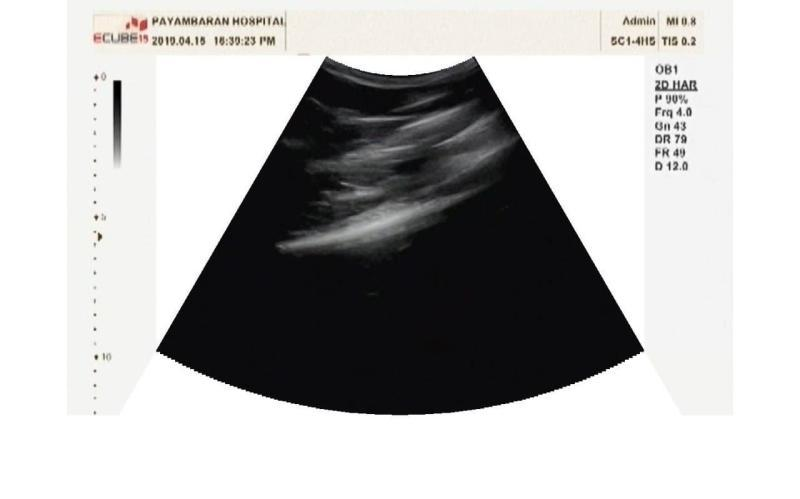
- Getting video data with a capture card
- Screenshot with Doctor request
- Edge detection and Color correction to save ink consumption
----------
!-- -- -->
Parking Receipt Issuer (SamanPark Co, Tehran, Iran)
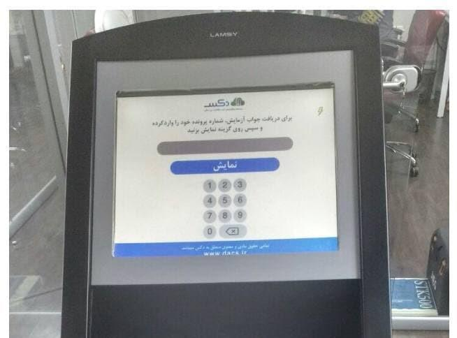
- Embedded C++ & Linux platform
- Printer
- Voice
- GPIO
- HID RFID reader
- LCD
----------
Parking Receipt Issuer (Tolou Co, Tehran, Iran)
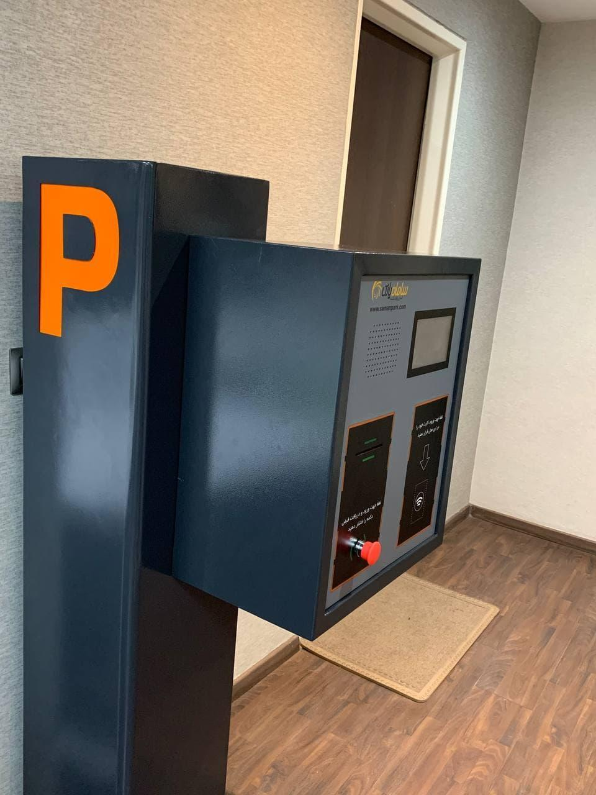
- Embedded C++ & Linux platform
- Recording of all requests (RFID and Push-button pushing) from the non-blocking serial port thread (over 1,000 events/day)
- Calling web service for permission checking and printing text
- Printing receipts, and inform people with LCD and speaker messages
- Driving of the network, barcode scanner, LCD, Thermal Pritner, speaker and amplifier, RFID reader, and GPIO
----------
Developed Tehran Metro Automatic Fare Collection Reader (ACECR KNUT branch, Tehran, Tehran, Iran)
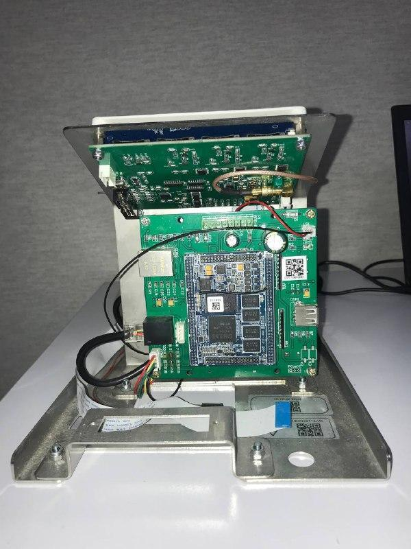
- Embedded C++ & Linux platform
- Recording of all events (RFID and Barcode) from the non-blocking serial port thread (over 10,000 events/day)
- Authorization based on local Couchebase database query and open/close gateway with permissions
- Insertion to local Couchebase database as first-offline design and synchronization with Couchebase server database
- Gate management and fraud detection base on Time.
- Design and implementation of SDK board to communicate with peripherals
- Derivation of the network, barcode scanner, Mifare RFID reader, LCD, and GPIO
----------
Developed Ticket Scanner to handle up to 5000 request/day
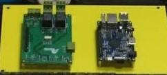
- ID Card Scanner (Tehran Taxi Organization - ACECR KNUT branch, Tehran, Iran)
- Orange Pi PC (QT - C++ - Embedded Linux)
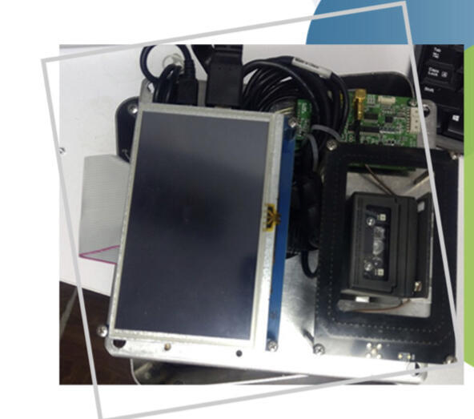
- ID Card Scanner (Tehran Taxi Organization - ACECR KNUT branch, Tehran, Iran)
- Orange Pi PC (QT - C++ - Embedded Linux)